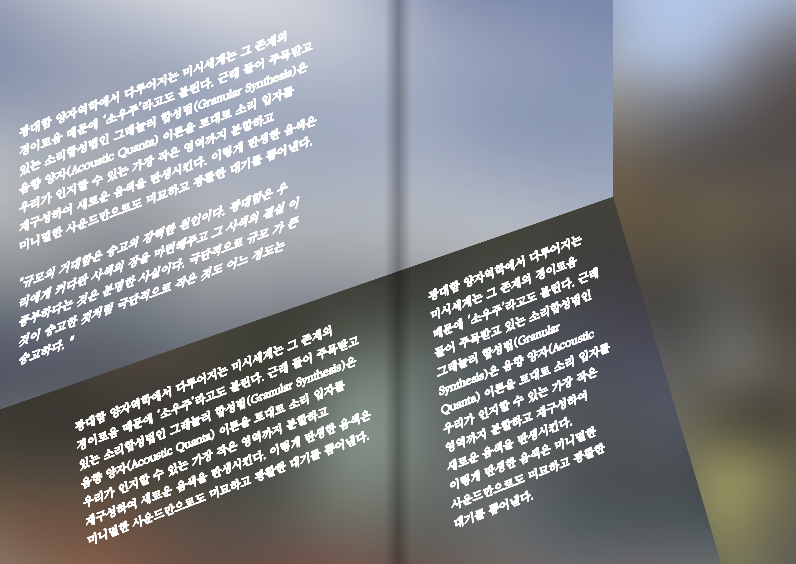
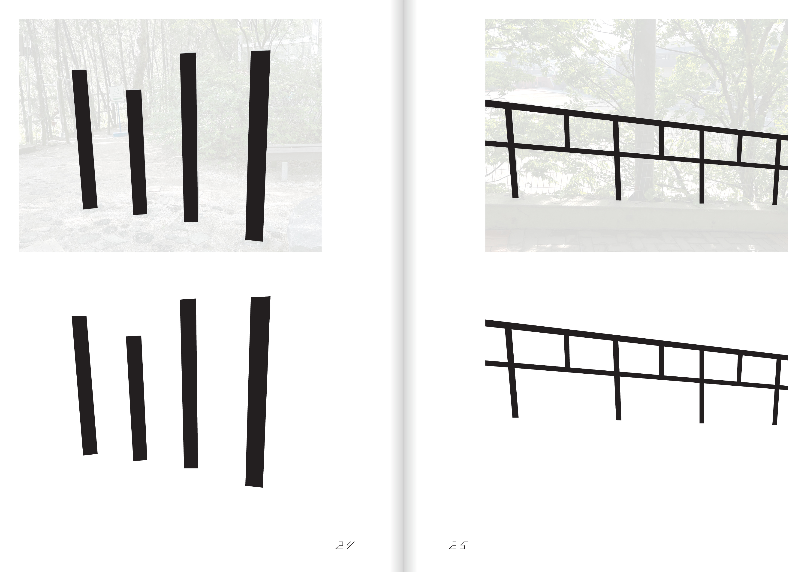
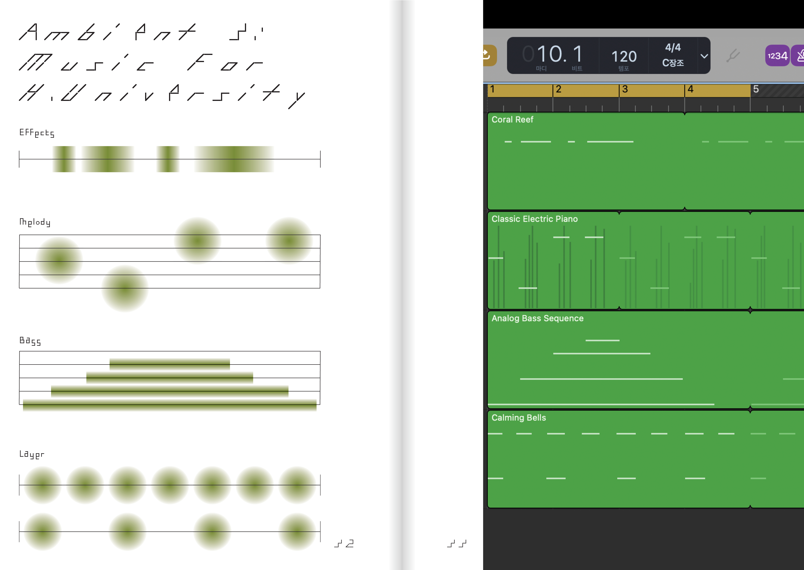

앰비언트 음악의 정의
앰비언트 음악은 전통적인 음악에서 부수적인 것으로 취급되던 음색과 분위기를 강조하는 음악이다.이 음악의 선구자인 브라이언 이노에 따르면 어떤 한 부분을 강조하지 않고 여러 층위가 공존할 수 있어야 하며,
무시되지 않을 정도의 흥미가 있어야 한다고 한다.
이 말은 주의 깊게 들으면 흥미롭지만 주의 깊게 듣지 않아도 되는 음악이라는 뜻으로 해석할 수 있다.
즉, 존재하지만 존재하지 않는 듯 한 음악이다. 위키피디아에서 정의하는 앰비언트 음악은 이렇다.
브라이언 이노는 앰비언트 음악은 음악이 환경의 일부가 되는 것, 평온한 분위기와 사유의 공간을 유도하기 위한 것이라고 정의하였다.
앰비언트 음악은 누군가에게 의식적으로 인식되는 것을 필요로 하지 않기에 선율과 리듬보다는 톤과 분위기를 강조한다.
음표와 구조에 얽매이지 않고, 사운드에서 얻어지는 운동성과 음정들을 중심으로 음악이 구성된다.
즉 언뜻 듣기에는 무질서한 음이 끝없이 반복될 뿐일 수도 있다.
그러나 화성적 드라마가 느슨한 이 음악에서 사람들은 자신마다 다른 감정들을 발견하기도 하고, 다른 해석들을 끌어내기도 한다.
청취자들은 많은 경우에 이를 통해 특정한 환경이나 분위기를 경험할 수 있게 된다.
Ambient Graphic
《Ambient 1: Graphic for Subways》는 ‘앰비언트 그래픽’을 앰비언트 음악으로 만드는 과정을 담는다.
‘앰비언트 그래픽’은 저자가 정의한 단어이며 일상 풍경에서 추출해낸 규칙적 혹은 불규칙적 패턴을 가진 그래픽을 뜻한다.
여기서부터는 책에 미처 담지 못한 이야기를 소개한다.
어느날 이시바시 에이코의 앰비언트 음악을 들으며 지하철 창문 너머를 바라보던 중 속도에 의해 흐려지는 풍경들이 듣고 있던 음악과 닮아 있음을 느낀다.
앰비언트 음악의 특징에 대해 더욱 알아보도록 하자.
앰비언트 음악의 특징
1. 공간적 감각앰비언트 음악은 리버브, 딜레이 효과를 사용하여 소리가 넓고 깊게 들리게 한다. 공간에 낮게 깔린 안개처럼 주변을 휘감는다.
2. 느린 템포, 단조로운 리듬
복잡한 리듬 패턴 대신에 단조롭고 반복적인 리듬이 쓰인다. 이는 청취자에게 안정감과 평온함을 제공한다.
3. 반복성 loop
짧은 멜로디나 리듬 패턴이 반복된다. 이러한 지속은 어떤 부분들이 원래 한계를 넘어 계속 뻗어나간다는 인상을 강하게 심어준다.
4. 자연음
바람, 물이나 비 소리, 자연의 소리 등이 삽입되는 경우가 많다.
단순히 녹음하여 사용하는 것뿐만 아니라 전자적으로 변형되어 독특한 사운드스케이프를 창조한다.
앰비언트 음악의 시각화 시도 1
처음에는 단순히 표면적인 것에만 집중했다.흰 글자에 흰 아웃라인을 넣어서 증폭의 효과를 주고, 일상 속 풍경의 이미지들을 흐리게 처리하여 배경으로 사용하고,이미지들을 공간처럼 엮어서 사용하였다.
그러나 앰비언트 음악을 단순히 시각화하는 데에 그친다면, 나의 주관이 가득 담긴 그래픽 메이킹에 그칠 뿐이다.
또한 음악의 특성을 보여주려면 음악 매체를 활용하는 것이 가장 효과적이지 않을까?

첫 번째로 만들었던 시안
앰비언트 음악의 시각화 시도 2-1
1. 앰비언트 음악은 공간성을 지녔기에 다양한 환경과 어우러질 수 있다.2. 기승전결이 존재하지 않고 조각 난 서사를 가졌다. 나머지 부분은 청취자가 스스로 채워 넣게 된다.
이러한 점을 더욱 명확하게 시각화하고 싶다는 생각에 여러가지 고민을 해본다.
그러다가 주변에서 볼 수 있는 풍경들, 예를 들어 나의 학교에서 찍은 일상적인 풍경들로부터 규칙을 찾아내는 방식을 생각했다.

두 번째로 만들었던 시안
앰비언트 음악의 시각화 시도 2-2
이로부터 시각적 특징을 추출해낸 후, Garageband를 활용하여 음악 요소로 만들었다.나는 음악을 만드는 것에 관련한 지식도 없었고 할 줄 아는 것은 피아노를 치는 것뿐이었기에 최적의 어플리케이션이었다.
맥북의 자판을 활용하여 전자 키보드를 칠 수 있는 기능이 있었기 때문이다.
그러나 주변의 풍경이라는 것 역시 너무 주관적이지 않나? Ambient, 즉 환경이라는 요소가 나에게만 적용되는 것이라면 이 책에는 의미가 없을 것이다.


첫 번째로 만들었던 음악
Reference
제25회 전주국제영화제에서 [트랙_잉]이라는 영화를 보게 된다. 시놉시스를 살펴보자면,‘한국과 카자흐스탄 사이를 달리는 기차의 이미지-임의의 데이터들은 분석의 대상이 되고, 네모들은 동작 이미지 속에서 의미를 생성 및 출력한다.’
영상 속에 임의로 생겨나는 네모들이 추출한 데이터에 대한 설명이 계속되는 영화였다.
이 ‘달리는 열차의 창문에서 얻은 비디오에서 추출한 이미지’라는 것에 매력을 느꼈고, 나의 주제에도 적합할 것이라고 느꼈다.
영화 [트랙_잉]의 트레일러 캡처본
Ambient Graphic
서울을 살아가는 한국인들에게 지하철 창문의 풍경만큼 모두에게 익숙하고 모두가 공감할 수 있는 것이 있을까?지하를 달리던 열차가 터널을 빠져나와 한강을 건널 때의 풍경에 대해 생각해본다.
사람들은 각자의 상황 속에서 그것을 마주하고 각자의 의미를 부여하여 채워넣는다.
Ambient 1: Graphic for Subways
저화질의 캠코더를 들고 2호선에 가서 잠실역에서 구의로 가는 풍경을 영상으로 담았다.앰비언트 음악은 딜레이, 에코 등의 효과가 겹겹이 싸여 개별 음이 명확하게 들리지 않고 희뿌연 안개 속에서 들려오는 듯하기 때문이다.
또한 이러한 장르의 음악에는 생활 소음 등이 삽입되어 공간성을 부각시키는 경우가 많다. 따라서 지하철 안에서 들려오는 온갖 소음들이 증폭되어 배경에 깔린다.
창문에서 볼 수 있는 풍경들은 각자가 선의 그래픽으로 채집되어 풍경이 바뀔 때마다 다른 음악이 덧씌워진다.
가령 ‘터널’의 음악이 흘러나오다가 열차가 이를 빠져나와 승강장에 도착하면 ‘승강장’의 음악이 흘러나온다.
건너편에서 다른 열차가 지나가면 ‘열차’의 음악이 덧쒸워진다. 이렇게 각각의 풍경에 음악 샘플을 하나씩 할당했다.
예를 들어 건너편의 다른 열차에서 추출해낸 풍경을 선 그래픽으로 변화시켜 연주한다.
[ambient1]
우리가 생활세계에서 접하는 소리들을 흘려듣지 않고 우리가 인식하고 지향하는 경우 우리는 그 소리가 우리의 의식 안에 있음을 알게 된다.음악은 시간 속에 펼쳐지며 존재를 드러낸다. 음악은 회화와 달리 어느 한 순간에 존재할 수 없으며, 진행한다는 점에서 미래와 과거만이 있는 공간(선)이다.
“음악은 경험의 망상체이고 언제나 과거로 밀려 나가 사라지지만 현재에 긴 그림자를 남기며”
그것이 더불어 있는 사실적인 공간은 현존재가 그때그때의 순간마다 각기 특별한 모습으로 존재했던 것을 개인의 영역에 각인시키고 의미들을 톺아보게 한다.
(장제헌, 실존 음악을 통한 사유 공간 구현에 관한 연구 - 앰비언트 음악 작품 ‘가장 밝지만 빛나지 않는 것’을 중심으로, 국민대학교, 2020년)
지하철 창문 속 [ambient1] 트랙에서, 더 나아가 이를 음악화한 방식에서, 삶의 파편에서 느껴지는 무언가를 찾아낼 수 있었다.
참고문헌
1. 장제헌, 실존 음악을 통한 사유 공간 구현에 관한 연구 - 앰비언트 음악 작품 "가장 밝지만 빛나지 않는 것"을 중심으로, 국민대학교, 2020년2. 고동훈, 앰비언트 뮤직(Ambient Music)의 특징을 적용한 영상음악에서의 사운드 디자인(Sound Design)연구, 상명대학교, 2014년
3. Christoph Cox, Daniel Warner, Audio Culture: Readings in Modern Music, Bloomsbury Publishing USA, 2017
4. 김경화, 노이즈의 역설: 유토피아적 실현인가? 디스토피아적 상상인가?, 『음악논단』 38집, 2017